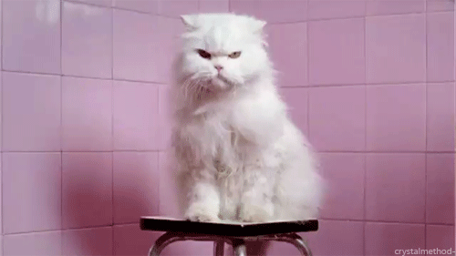
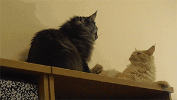
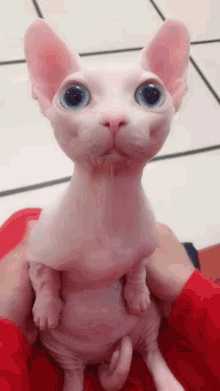
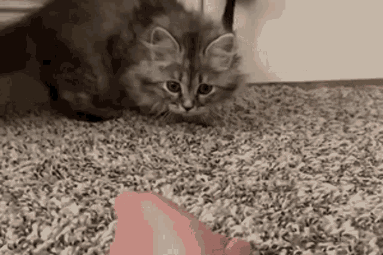
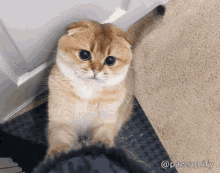
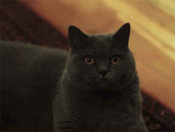
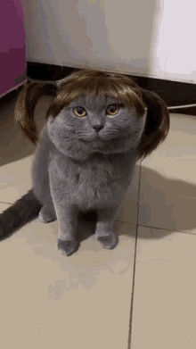

Cat Facts and Fun
Welcome to the Cat Kingdom! Explore interesting facts and features of different cat breeds.
Ragdoll Cat

Ragdoll cats are known for their docile temperament and tendency to go limp when picked up, hence the name "Ragdoll." Their long, fluffy fur adds to their charming appearance.
Persian Cat
Persian cats have a distinctive appearance with a flat face and long, flowing coat. They are calm and enjoy lounging around in regal fashion.
Maine Coon
Maine Coon cats are large, sociable, and known for their tufted ears and bushy tails. They are often referred to as "gentle giants."
Siamese Cat
Siamese cats are known for their sleek bodies, short coats, and distinctive color points. They are vocal and enjoy interaction with their owners.
Bengal Cat

Bengal cats have a distinctive spotted or marbled coat, resembling that of a wild leopard. They are energetic and love to play.
Sphynx Cat
Sphynx cats are hairless, known for their warm, wrinkled skin. Despite their lack of fur, they are friendly and affectionate.
Abyssinian Cat
Abyssinian cats have a short coat with a ticked tabby pattern. They are known for their playful and active nature.
Siberian Cat
Siberian cats are known for their thick, water-resistant coat and friendly, intelligent nature. They are also hypoallergenic.
Scottish Fold
Scottish Folds are recognized by their unique folded ears. They have a sweet temperament and are known for their charming appearance.
Burmese Cat
Burmese cats are sleek, muscular, and known for their beautiful, shiny coats. They are affectionate and enjoy human companionship.
British Shorthair
British Shorthair cats have a round face and dense, plush coat. They are easygoing and make great companions.